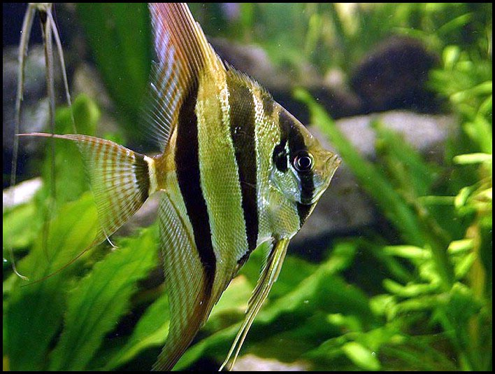

Elofordulas
Megjelenes
Rendszertan
Valtozatai
Az Amazonasnak és mellékfolyójának, a Rio Negrónak lakója ez az érdekes testformájú, annyiak által megcsodált és kedvelt díszsügér. Nevét vonzó külsejének és méltóságteljes úszásmódjának köszönheti. A vadon élõ változat zöldesbarna színû, testén sötét, hosszanti keresztcsíkokkal. Bár rengeteg színváltozata létezik, a természetes forma a legkedveltebb. Eredeti élõhelyén is dús növények között vadászik, ezért fogságban is tartsuk sûrû növények között.
